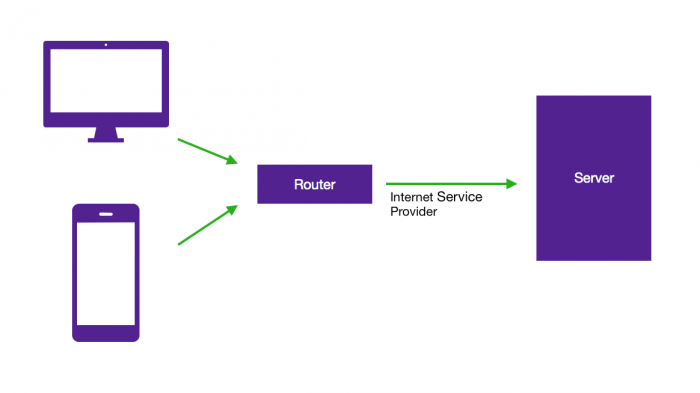
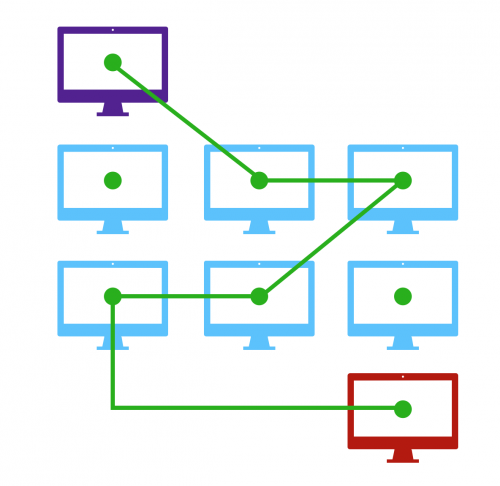
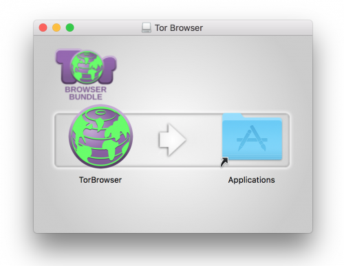
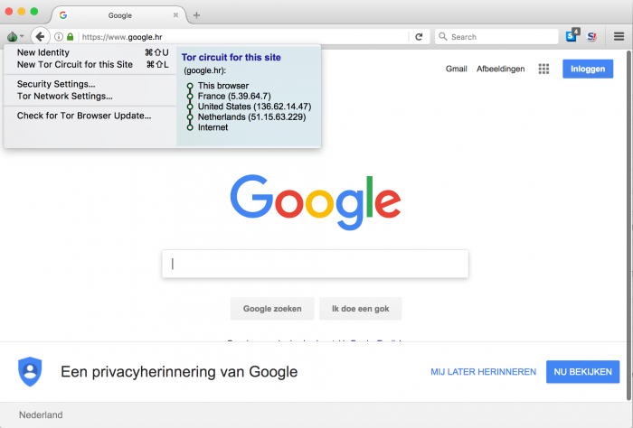
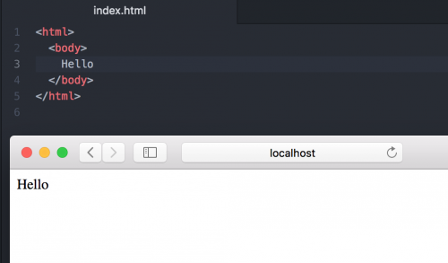
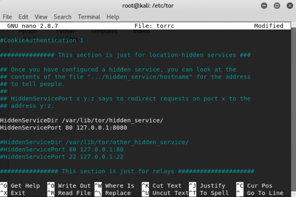
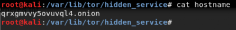
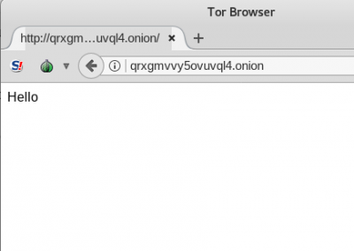

Hidden Service
Temu rezervirala: Kristiana Vitez
Sadržaj |
Uvod
Deep Web je kolekcija svih web stranica koje nisu indeksirane pretraživačima. Pojedinci koriste Deep Web za anonimno širenje i dijeljenje informacija, pretraživanje sadržaja bez odricanja privatnosti, no neke Deep web stranice su i nekonvencionalne trgovine koje nude uznemirujući raspon (ilegalnih) usluga ili proizvoda. Deep Webu može se pristupiti putem servisa kao što je Tor.
Kako radi Tor mreža?
Pristupanje Internetu direktno, bez VPN-a ili proxy poslužitelja prenosi informacije na linearan način. Uređaj priključen na internet putem rutera slijedi niz zahtjeva za određenom URL ili IP adresom te vraća sadržaj uređaju koji je informaciju zatražio. Sadržaj prijenosa može se šifrirati pomoću HTTP-a, SSL-a i slično, ali zahtjevi su i dalje direktno povezani s IP adresom te ih može analizirati davatelj internetskih usluga (ISP).

Slika 1. Pojednostavljeni prikaz standardnog prometa
{kind=link}
Onion Router (Tor) je jedan od najpoznatijih internetskih alata za održavanje privatnost i anonimnosti. Poput VPN-ova, mreže Tor koriste virtualne tunele, ali za razliku od VPN-ova, ti tuneli ne povezuju klijente izravno s poslužiteljima. Mrežni promet preusmjeri se na Tor mrežu, a zatim skače kroz druge Tor čvorove unutar mreže prije nego izađe natrag u regularni internet. Inicijalni paketi su redudantno šifrirani i svaki Tor čvor na putu dekriptira samo sloj koji zna što treba učiniti s paketom. Zbog te slojevite enkripcije, niti jedan Tor čvor ne poznaje i izvor i odredište bilo kojeg mrežnog paketa. No, ovaj ulaz natrag u internet iz Tor mreže predstavlja sigurnost i rizik privatnosti. Sadržaj koji prolazi kroz izlazni čvor podložan je pouzdanosti samog čvora, budući da čvor ima istu razinu pristupa detaljima zahtjeva kao i ISP. Ako podaci u tom trenutku nisu šifrirani, moguće ih je zarobiti i zlonamjerno upotrijebiti. Kako bismo izbjegli opasnost od iskorištavanja izlaznih čvorova, možemo radije pristupiti web stranici koja je dostupna samo putem Tor mreže u obliku skrivenog servisa (hidden service). Umjesto da traži IP ili URL adresu, servis će biti dostupan jedino putem onion adrese, koja može biti otkrivena samo njegovim imenom unutar Tor mreže.

Slika 2. Prikaz Tor routinga
{kind=link}
Instaliranje Tor klijenta
Skrivenim servisima može se pristupiti samo putem Tor sistema. Najlakši način za pokrenuti Tor klijenta jest instalirati Tor Browser Bundle koji sadrži hardened verziju Firefoxa i kreira SOCKS5 proxy na localhost portu 9150. Za instalirati Tor preglednik na Windows, macOS ili Linux operativnom sustavu, izravno sa stranice Tor Project skinemo odgovarajuću verziju i pratimo daljnje korake.

Slika 3. macOS Tor Install
{kind=link}
Klikom na Tor logo u gornjem lijevom kutu preglednika otvara se izbornik na kojem se vide informacije o Tor cirucitu. Circuit je ruta kroz Tor koju je vaš zahtjev prošao. Primjerice, da bih vidjeli google.hr stranicu iz Hrvatske, ušli smo u Tor mrežu u Francuskoj, odskočili kroz Sjedinjene Američke Države te izašli u clear net u Nizozemskoj.

Slika 4. Tor circuit
{kind=link}
Hosting poslužitelja
Prvi korak u konfiguriranju Tor servera jest postavljanje načina posluživanja HTTP sadržaja. Vezat ćemo naše lokalno okruženje poslužitelja na 127.0.0.1 kako bi se osiguralo da će biti dostupno samo lokalno i preko Tor-a. Na sustavu gdje možemo izravno pozvati Python modul, jedan od izbora je korištenje http.server modula. Nakon mijenjanja direktorija na onaj koji sadrži sadržaj koji želimo hostati, pokrećemo server izravno iz komandne linije. Koristeći Python 3 i http.server, u terminal upisujemo liniju koja će nas vezati na 127.0.0.1 i pokrenuti server na 8080 portu:
- python3 -m http.server --bind 127.0.0.1 8080
To će biti dovoljno za testni server, no za bilo koji veći ili trajniji projekt bolji bi bio poslužiteljski softver poput Nginx-a koji pruža poslužiteljski backend prikladniji i sigurniji kad su u pitanju potencijalne prijetnje hidden serviceu. Samo treba biti siguran da je vezan na 127.0.0.1 kako bi se spriječilo otkrivanje putem servisa kao što je Shodan.
Kako bismo bili sigurni da server radi, testirat ćemo lokalnu adresu u web browseru:

Slika 5. Okruženje poslužitelja dostupno na 127.0.0.1:8080
{kind=link}
Kreiranje skrivenog servisa
Dva su glavna razloga za kreiranje Tor hidden servicea:
1. Silk Road Model. Želimo servis koji će biti i ostati skriven i u ni u kojem slučaju neće biti povezan s nama.
2. Facebook Model. Želimo pružiti siguran i anoniman način posjetiteljima da dođu do nas, makar stranica bila bila pripisana nama.
Hidden service kreirat ćemo Linux operativnom sustavu. Prvo trebamo instalirati Tor servis naredbom
- sudo apt-get install tor,
a da bismo potvrdili lokaciju upravo instaliranog Tora, koristimo whereis tor. Ono što moramo pronaći i editirati kako bi Tor usmjerili na naš hidden service jer torrc datoteka.
Za editirati datoteku, pokrećemo nano torrc. Sekcija koju želimo editirati nalazi se iza sljedećeg komentara:
- ############### This section is just for location-hidden services ###

Slika 6. Torrc datoteka
{kind=link}
Za usmjeriti Tor na naš skriveni servis, moramo otkomentirati sljedeće dvije linije:
- HiddenServiceDir /var/lib/tor/hidden_service/
- HiddenServicePort 80 127.0.0.1:80
Zatim je potrebno promijeniti port na kojem Tor traži naš poslužitelj, odnosno HiddenServicePort 80 127.0.0.1:80 mijenjamo u HiddenServicePort 80 127.0.0.1:8080, i spremiti datoteku.
Sa tim promjenama, možemo pokrenuti Tor servis naredbom
- sudo tor
Po prvom pokretanju Tor-a s novom konfiguracijom, automatski će se generirati .onion adresa. Ta će informacija biti pohranjena u "/ var / lib / tor / hidden_service" (ili drugom direktoriju specificiranom u torrc datoteci). Da bismo vidjeli novo generiranu adresu, u terminalu pokrećemo cat naredbu:

Slika 7. Hostname
{kind=link}
Testirati skriveni servis možemo unosom te adrese u Tor preglednik.

Slika 8. Kreirani hidden service
{kind=link}
Očuvanje .onion anonimnosti
Localhost
Nemojte nikome dopustiti da pristup vašoj Onion web aplikaciji putem clearneta. Web poslužitelj bi trebao slušati samo 127.0.0.1, tako da se jedinstveni Tor daemon može povezati s njom. Razlog zašto su skeneri koji neprestano skeniraju i indeksiraju cijeli IPv4 javni prostor (0.0.0.0/0)
Indeksiranje direktorija
Indeksiranje ili popisivanje direktorija poznati je propust, odnosno ranjivost koji napadaču može otkriti osjetljive informacije. Izbjeći ga možemo onemogućavanjem autoindex modula u konfiguraciji raznih web poslužitelja.
Potpis i izvješćivanje o greškama
Onemogućiti potpis i izvješčivanje o greškama dobro je zbog kako bismo osigurali da poslužitelj ima mali otisak prsta, nema specifičnih zaglavlja ili jedinstveni broj verzije kojom bi vas se moglo pratiti. Većina izvješća o pogreškama (odlagališta memorije itd.) vjerojatno će propuštati vašu IP adresu ili druge relevantne informacije.
Popravak vlastitih nedostataka
Server je potrebno održavati na zadnjoj verziji, a kod pisati čisto i pretrpano SQL injectionima.
Route - Tor mreža
Neke web aplikacije šalju potvrdu e-pošte koje bi primatelju moglo otkriti vašu IP adresu. To se može dogoditi i ako vaša aplikacija pokušava pristupiti bilo kojoj trećoj strani putem clearneta (API za plaćanje bitcoina, analitika, Facebook, ...). Da biste to spriječili, preporuka je transparentno usmjeriti sav odlazni promet preko Tor-a. Ukratko, postavite svoj vatrozid da poništi sve odlazne veze, osim onih koji dolaze iz procesa Tor-a.
Literatura
[1] iCann, The Dark Web: The Land of Hidden Services, Preuzeto sa: https://www.icann.org/news/blog/the-dark-web-the-land-of-hidden-services
[2] Medium, Securing a Web Hidden Service, Preuzeto sa: https://blog.0day.rocks/securing-a-web-hidden-service-89d935ba1c1d
[3] Comparitech, How to set up a hidden Tor service or .onion website, Preuzeto sa: https://www.comparitech.com/blog/vpn-privacy/how-to-set-up-a-tor-hidden-service/#Setting_up_a_Tor_service
[4] NullByte, Host your own hidden service, Preuzeto sa: https://null-byte.wonderhowto.com/how-to/host-your-own-tor-hidden-service-with-custom-onion-address-0180159/